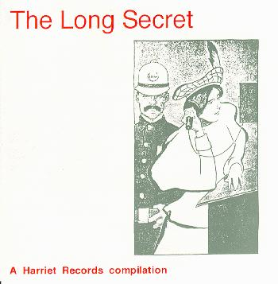

the long secret

title: the long secret
format: cd
songs:
vehicle flips - diplomacy, home and abroad
twig - lilac ride
the ampersands - my favourite jumper
the mountain goats - duke ellington
six cents and natalie - quilting bee
the gothic archies - the abandoned castle of my soul
pest 5000 - godsound
weeping in fits and starts - big fish
frank boscoe & karl hendricks - song for tim and alix
the cat's miaow - the phoebe i know
fertile virgin - my three suns
tully craft - pop songs your new boyfriend's to stupid to know about
lotus eaters - whistles and bells
prickly - hedgeclipping song
the extra glennsprocess of elimination
high risk group - elevation craving
the magnetic fields - plant white roses
please mail any questions/comments/complaints, or just notes hello to:nall@themountaingoats.net